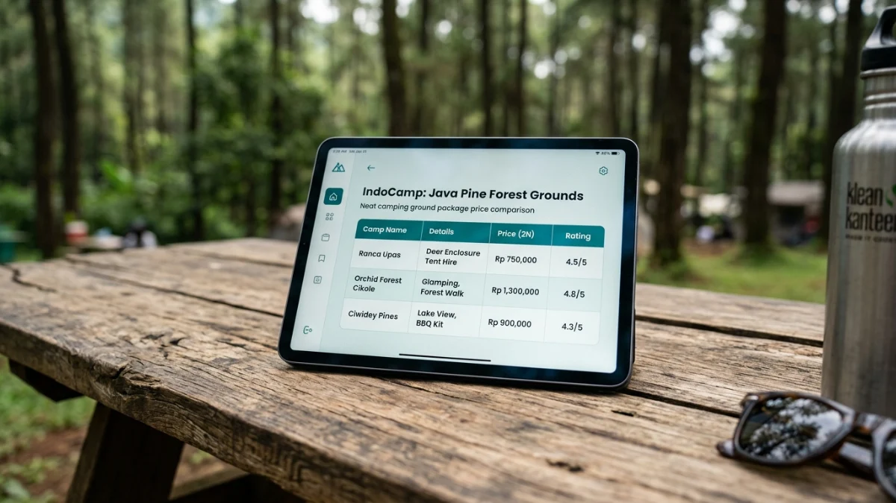

Panorama camping ground dengan fasilitas yang bervariasi mempengaruhi harga sewa lokasi.
Panorama camping ground dengan fasilitas yang bervariasi mempengaruhi harga sewa lokasi.
Harga camping ground di Indonesia berkisar antara Rp15.000 hingga Rp300.000 per malam tergantung lokasi, fasilitas, dan kategori pengelola, dengan rata-rata tarif umum sekitar Rp50.000-Rp100.000 per orang per malam.
- Apa Itu Camping Ground dan Mengapa Harganya Berbeda-beda?
- Berapa Kisaran Harga Camping Ground di Indonesia?
- Faktor Apa Saja yang Mempengaruhi Harga Camping Ground?
- Perbandingan Harga Camping Ground: Pemerintah vs Swasta
- Berapa Biaya Total yang Harus Disiapkan untuk Camping?
- Tips Hemat Mendapatkan Harga Camping Ground Terbaik
- Apakah Glamping Lebih Mahal dari Camping Biasa?
- Kesalahan Umum Saat Memilih Camping Ground Berdasarkan Harga
Apa Itu Camping Ground dan Mengapa Harganya Berbeda-beda?
Camping ground adalah area yang dipersiapkan khusus untuk kegiatan berkemah, dilengkapi fasilitas minimal hingga premium tergantung kelas pengelolaannya. Perbedaan harga camping ground sangat dipengaruhi oleh kualitas fasilitas, lokasi strategis, dan tingkat pengelolaan profesional yang ditawarkan.
Camping ground berbeda dari sekadar berkemah bebas karena menawarkan infrastruktur yang menjamin keamanan dan kenyamanan pengunjung. Area ini umumnya memiliki zona tenda yang sudah ditentukan, sistem drainase, dan staf pengawas. Pengelola camping ground dapat berupa Taman Nasional, Perhutani, pemerintah daerah, atau pihak swasta.
Di Indonesia, kegiatan camping mengalami pertumbuhan signifikan. Berdasarkan data Kementerian Pariwisata dan Ekonomi Kreatif (2024), jumlah wisatawan yang memilih paket wisata alam termasuk camping meningkat sekitar 35 persen dibanding tahun sebelumnya. Tren ini mendorong munculnya beragam camping ground dengan kisaran harga yang semakin bervariasi.
Berapa Kisaran Harga Camping Ground di Indonesia?
Harga camping ground di Indonesia secara umum terbagi dalam tiga kategori utama berdasarkan fasilitas dan lokasi, yaitu kategori dasar, menengah, dan premium.
- Kategori Dasar (Budget): Camping ground kategori ini biasanya dikelola oleh instansi pemerintah seperti Perum Perhutani atau Unit Pelaksana Teknis Taman Nasional. Tarif berkisar antara Rp15.000 hingga Rp50.000 per orang per malam. Fasilitas yang tersedia umumnya hanya lahan datar untuk mendirikan tenda, toilet sederhana, dan sumber air. Cocok untuk pengunjung yang membawa perlengkapan sendiri dan memprioritaskan pengalaman alam yang murni.
- Kategori Menengah: Dikelola campuran antara swasta kecil dan badan usaha daerah. Tarif berada di kisaran Rp50.000 hingga Rp150.000 per orang per malam. Fasilitas lebih lengkap mencakup toilet bersih, area parkir memadai, mushola, dan kadang warung makan. Beberapa camping ground menengah sudah menyediakan tenda sewa dengan harga tambahan Rp50.000 hingga Rp150.000 per unit.
- Kategori Premium: Camping ground premium biasanya dikelola oleh perusahaan wisata profesional. Tarif mulai dari Rp150.000 hingga Rp300.000 atau lebih per orang per malam. Fasilitas mencakup toilet bersih dengan air panas, colokan listrik, WiFi, jalur tracking terawat, dan staf profesional. Beberapa menawarkan glamping (glamorous camping) dengan kasur dan dekorasi di dalam tenda.

Perbandingan tarif camping ground sangat bergantung pada fasilitas dan pihak pengelola.Faktor Apa Saja yang Mempengaruhi Harga Camping Ground?
Harga camping ground ditentukan oleh kombinasi faktor lokasi, fasilitas, musim kunjungan, dan jenis layanan yang dipilih pengunjung.
- Lokasi dan Aksesibilitas: Camping ground di kawasan wisata populer seperti sekitar gunung-gunung di Jawa, Bali, atau Lombok cenderung lebih mahal karena tingginya permintaan. Aksesibilitas juga berperan: lokasi yang mudah dijangkau kendaraan pribadi memiliki tarif lebih tinggi dibanding yang memerlukan trekking panjang.
- Kualitas dan Kelengkapan Fasilitas: Fasilitas langsung mempengaruhi harga. Toilet yang bersih dan terawat, ketersediaan air bersih, listrik, dan area parkir yang luas berkontribusi pada kenaikan tarif. Camping ground dengan fasilitas kamar mandi air panas bisa mematok harga dua hingga tiga kali lipat dibanding yang hanya menyediakan kamar mandi air dingin.
- Pengelola dan Status Kawasan: Kawasan yang dikelola Taman Nasional atau Perhutani umumnya memiliki tarif lebih terjangkau karena tidak sepenuhnya berorientasi profit. Sebaliknya, camping ground swasta memperhitungkan biaya operasional, marketing, dan margin keuntungan sehingga tarifnya lebih tinggi.
- Musim dan Hari Kunjungan: Harga camping ground biasanya naik 20 hingga 50 persen pada musim liburan sekolah, libur nasional panjang, dan akhir pekan. Memesan di hari kerja atau di luar musim puncak (off-season) adalah cara paling efektif menghemat biaya.
- Paket Layanan yang Dipilih: Camping ground modern sering menawarkan beberapa pilihan paket. Tiket masuk saja adalah yang paling murah. Paket sewa tenda menambah biaya. Paket all-inclusive yang mencakup sewa alat, konsumsi, dan pemandu wisata adalah yang paling mahal tetapi paling praktis, terutama untuk pemula atau keluarga dengan anak kecil.
Perbandingan Harga Camping Ground: Pemerintah vs Swasta
Camping ground pemerintah menawarkan tarif lebih murah dengan fokus konservasi, sementara camping ground swasta memberikan fasilitas lebih lengkap dengan pengalaman yang lebih terstruktur.
- Camping Ground Pemerintah: Dikelola Taman Nasional, Perhutani, atau Pemerintah Daerah. Tarif masuk umumnya Rp15.000 hingga Rp75.000 per orang. Fasilitas bersifat fungsional tanpa kemewahan. Regulasi ketat terkait pengelolaan sampah dan pelestarian lingkungan. Kuota pengunjung biasanya terbatas untuk menjaga kelestarian ekosistem.
- Camping Ground Swasta: Dikelola perusahaan wisata atau perorangan. Tarif lebih tinggi, mulai Rp75.000 hingga Rp300.000 per orang atau lebih. Fasilitas lebih lengkap dan terawat. Pelayanan lebih responsif. Sistem reservasi online lebih mudah. Pilihan paket lebih beragam mulai dari self-camping hingga glamping.
Survei komunitas camping Indonesia (2023) menunjukkan bahwa sekitar 62 persen pengunjung camping ground memilih lokasi swasta karena fasilitas yang lebih nyaman, meski harganya lebih tinggi.
Berapa Biaya Total yang Harus Disiapkan untuk Camping?
Biaya total camping bukan hanya tiket masuk camping ground, melainkan akumulasi seluruh pengeluaran mulai dari transportasi, perlengkapan, konsumsi, hingga akomodasi.
Berikut estimasi biaya total untuk camping 2 hari 1 malam per orang dengan perlengkapan sendiri:
- Tiket masuk camping ground: Rp20.000 hingga Rp100.000
- Transportasi pulang-pergi: sangat bervariasi tergantung jarak
- Konsumsi (makanan dan minuman): Rp50.000 hingga Rp150.000
- Biaya parkir kendaraan: Rp10.000 hingga Rp30.000
- Biaya lain-lain (toilet, sampah, dll.): Rp5.000 hingga Rp20.000
Jika tidak memiliki perlengkapan sendiri, tambahkan biaya sewa tenda Rp50.000 hingga Rp200.000, sleeping bag Rp30.000 hingga Rp75.000, dan matras Rp15.000 hingga Rp30.000.
Tips Hemat Mendapatkan Harga Camping Ground Terbaik
Harga camping ground dapat diminimalkan dengan perencanaan yang tepat tanpa mengorbankan keamanan dan kenyamanan.
- Pilih Waktu yang Tepat: Kunjungi camping ground pada hari Senin hingga Kamis atau di luar musim liburan nasional. Perbedaan harga antara weekday dan weekend bisa mencapai 40 persen di lokasi yang sama.
- Pesan Lebih Awal: Banyak camping ground swasta menawarkan harga early bird untuk pemesanan minimal dua minggu sebelum tanggal berkemah. Diskon yang diberikan umumnya berkisar 10 hingga 25 persen.
- Manfaatkan Sistem Grup: Beberapa camping ground memberikan diskon grup untuk rombongan minimal 10 orang. Bergabung dengan komunitas hiking atau camping lokal bisa menjadi cara efektif mendapatkan harga lebih hemat melalui pemesanan kolektif.
- Bawa Perlengkapan Sendiri: Sewa alat di lokasi camping selalu lebih mahal dibanding memiliki perlengkapan sendiri dalam jangka panjang. Untuk yang rutin camping, investasi membeli tenda dan sleeping bag sendiri akan menghemat biaya secara signifikan.
- Bandingkan Harga Melalui Platform Online: Platform pemesanan wisata alam sering menawarkan harga camping ground lebih murah dibanding memesan langsung ke lokasi, terutama dalam periode promosi tertentu.
Apakah Glamping Lebih Mahal dari Camping Biasa?
Glamping (glamorous camping) secara konsisten lebih mahal dari camping reguler, namun menawarkan kenyamanan yang jauh berbeda, terutama bagi pemula atau keluarga dengan anak kecil.
Tarif glamping di Indonesia umumnya mulai dari Rp250.000 hingga Rp800.000 per orang per malam, bahkan bisa lebih tinggi di destinasi premium seperti area sekitar Bromo atau Bali. Harga ini sudah mencakup tenda atau kubah transparan yang dilengkapi kasur, bantal, selimut, dan kadang kamar mandi pribadi.
Perbedaan mendasar glamping dibanding camping biasa adalah pengalaman yang ditawarkan: pengunjung menikmati alam tanpa perlu membawa atau menyiapkan perlengkapan apapun. Ini menjadikan glamping pilihan ideal bagi keluarga yang ingin mengenalkan pengalaman alam kepada anak-anak tanpa risiko ketidaknyamanan.
Kesalahan Umum Saat Memilih Camping Ground Berdasarkan Harga
Memilih camping ground semata berdasarkan harga termurah sering menyebabkan pengalaman yang kurang memuaskan atau bahkan berbahaya.
- Tidak Mengecek Fasilitas Toilet dan Air: Harga murah tidak selalu buruk, tetapi pastikan minimal tersedia toilet yang layak dan sumber air bersih. Camping ground tanpa fasilitas sanitasi dasar yang baik dapat menimbulkan masalah kesehatan.
- Mengabaikan Keamanan Lokasi: Cek ulasan pengunjung sebelumnya mengenai keamanan lokasi, terutama terkait kondisi medan, keberadaan satwa liar, dan respons pengelola saat darurat.
- Tidak Memperhitungkan Biaya Tersembunyi: Beberapa camping ground memiliki biaya tambahan yang tidak tertera di tarif utama, seperti biaya parkir, biaya kebersihan, atau biaya sewa fasilitas umum. Tanyakan secara detail sebelum memesan.
- Booking Saat Musim Puncak Tanpa Reservasi: Datang tanpa reservasi di musim liburan sering berakhir dengan tidak mendapatkan spot atau harus membayar harga jauh lebih mahal karena keterbatasan pilihan.
Harga camping ground di Indonesia sangat bervariasi, mulai dari Rp15.000 hingga Rp300.000 atau lebih per orang per malam tergantung kategori, lokasi, dan fasilitas. Untuk mendapatkan pengalaman camping terbaik sesuai budget:
- Tentukan prioritas Anda: kenyamanan fasilitas atau harga terjangkau
- Booking lebih awal untuk mendapatkan harga terbaik
- Kunjungi di luar musim puncak untuk menghemat 20-40 persen
- Selalu cek fasilitas sanitasi sebelum memilih lokasi berdasarkan harga murah
- Pertimbangkan camping ground pemerintah untuk opsi paling hemat
- Manfaatkan paket grup jika bepergian dengan rombongan besar
FAQ
1. Berapa harga camping ground yang murah tapi bagus?
Camping ground yang terjangkau namun berkualitas umumnya ada di kawasan yang dikelola Perhutani atau Taman Nasional dengan tarif Rp15.000 hingga Rp75.000 per orang. Baca ulasan pengunjung sebelumnya untuk memastikan fasilitas dasar tersedia dengan baik.
2. Bisakah bayar harga camping ground di tempat (tanpa reservasi)?
Di camping ground yang tidak terlalu ramai dan dikelola pemerintah, pembayaran di tempat umumnya masih bisa dilakukan. Namun untuk camping ground swasta yang populer, reservasi online sangat disarankan, terutama saat musim liburan.
3. Apa perbedaan harga camping ground weekday dan weekend?
Selisih harga antara hari kerja dan akhir pekan bervariasi, umumnya berkisar 20 hingga 50 persen lebih mahal di akhir pekan. Beberapa camping ground premium bisa menerapkan perbedaan harga yang lebih besar lagi pada libur panjang nasional.